The Spinosaurus aegyptiacus, or more commonly known as the Spinosaurus, is a dinosaur from the Late Cretaceous Period.
It lived around 99 million to 93.5 million years ago.
The Spinosaurus belongs to the Spinosaurus Aegyptiacus species, and the class of Reptilia.
Other relatives of the Spinosaurus, such as the Irritator and the Baryonyx, belong to the Spinosauridae family as well.
Most Spinosaurus skeletons were found around North Africa and Egypt.
Today, it's generally a desert, but back 93 million years ago, it was a vast river system and flourishing with flora.
Many other Spinosaurus specimens were found around Asia, Europe, and South America.
They likely lived in the same environment as North Africa 93 million years ago.
Relatives of the Spinosaurus, like the Irritator of Brazil, lived farther away from the Spinosaurus for unknown reasons.
The first person to discover Spinosaurus remains was Ernst Stromer in 1915 in Egypt.
The main part of the identification of the Spinosaurus and its relatives is, of course, its spine or scientifically called, its sail.
In most media, the Spinosaurus' sail is very dull, but many researchers believe that its sail was more colorful, most likely used for social interactions.
The sail would have been used like a male peacocks' colorful feathers.
Most Spinosaurus specimens recovered were from 14m to 18m in length.
So, most Spinosaurus would be as long as a standard volleyball court.
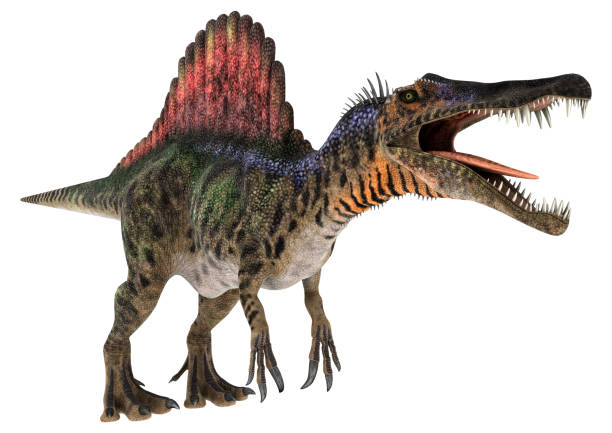
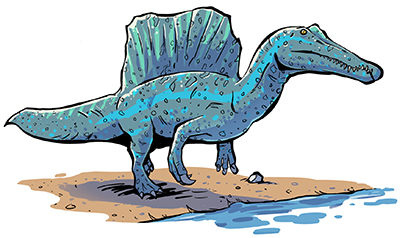
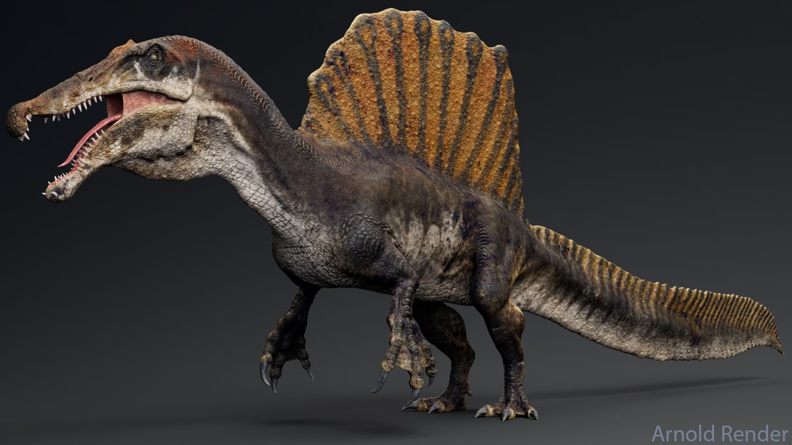
Habitat
The Spinosaurus lived mostly in North African swamps and muddy areas with water.
The Spinosaurus also lived in Asia, Europe, and South America.
They mostly lived there because, 95 million years ago, it was a prosperous ecosystem rather than its present day deserts and tropics.
Its habitat provided plenty of fish and other prey to the Spinosaurus.
Its relatives lived in similar places, such as Brazil and England.
Most of the fossils were found in these places, so scientists can only infer that they lived in these places.
The Spinosaurus also lived in mangrove swamps, which also generally yielded plentiful prey.
Behaviors/Adaptations/Breeding
The Spinosaurus was a mostly water-bound creature, but it still went on land from time to time.
It had very dense bones to have greater buoyancy in the water.
Its long, narrow jaw was used to capture fish much easier, similar to a fishnet.
Along with that, its teeth were straight, unlike other carnivores during that time period.
The Spinosaurus hunted the Coelacanth, Onchopristis (sawfish), and the Mawsonia with its long, narrow jaw.
Scientists do not know exactly how the Spinosaurus bred, but it was concluded that the eggs would be laid on land, covered in dried brush, leaves, and other vegetation to conceal them.
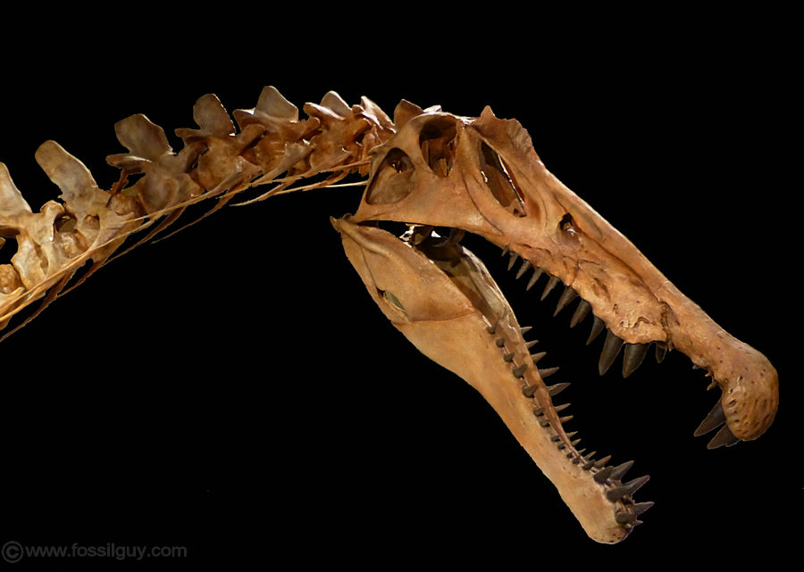
(The Spinosaurus's long, narrow jaw)(The Spinosaurus's dense bones)
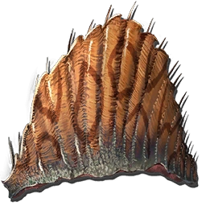
(The Spinosaurus's Sail)
Diet
The Spinosaurus's diet usually consisted of fish, based on its long jaw.
Its prey ran down rivers near where the Spinosaurus resided.
It could have eaten other dinosaurs, but it all truly depended on how hungry it was.
Also, based on some teeth scientists found lodged in a pterosaur from the Cretacous Period, suggested that it could have also hunted land-dwelling animals, or scavenged.
A present day example are the descendants of the Spinosaurus is, the crocodile.
The crocodile, too, eats fish and some land dwelling creatures.
Of course, they hunt much smaller game than the Spinosaurus did,
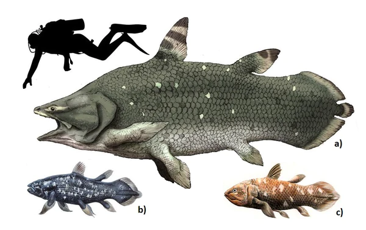
(Coelacanth described in Figure a)
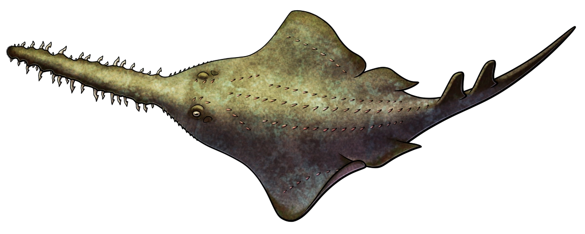
(Onchopristis)
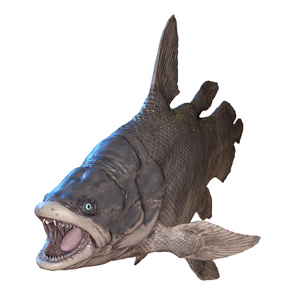
(Mawsonia)
Predators
The Spinosaurus has been considered as an apex predator back in its living state for some time now.
It lived in the same time as the Tyrannosaurus Rex which was the Cretacous Period.
Although it was very unlikely that any Tyrannosaurus Rexes came into contact with a Spinosaurus or its relatives just due to the fact that they all lived in different places of each other.
But, just because they were apex predators, doesn't mean there still weren't animals hunting them. Instead of hunting them in their fully grown state, the Oviraptor would eat the Spinosaurus' eggs.
It lived in Asia, which is one of the primary places the Spinosaurus lived alongside the Oviraptor.
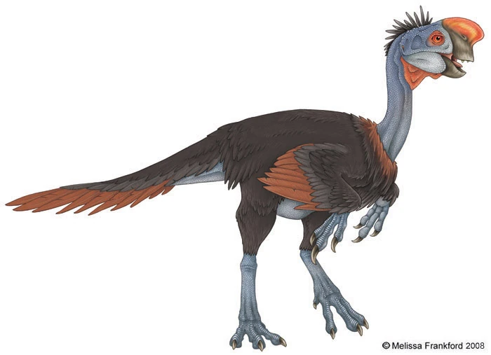
(Possible hunter of Spinosaurus Eggs, the Oviraptor)
Fossils
The Spinosaurus is a very unique specimen of most dinosaurs discovered.
Its skeletal structure is the main reason why it is so much more special than all other dinosaurs.
Its skeleton features very dense bones for enhanced buoyancy in the water, mostly used to hunt prey more effectively.
It also features a very long, protruding skull, much like modern day crocodiles no snag fish easier.
Its third, and frankly, most obvious aspect is its ginormous sail.
Most relatives of the Spinosaurus have a sail, such as the Oxalaia and Irritator.
Its sail is also similar to the Permian Period's Dimetrodon.
Although the Dimetrodon and Spinosaurus are not related whatsoever.
Most of the Spinosaurus' fossils were found around South America, and North Africa along with its relatives.
There are some discoveries in North America, but they cannot be determined to be from the Spinosaurus or if it's just a similar species.
Scientists figured out how the Spinosaurus lived just based on these fossil discoveries!
Just its skull is on average 6 feet long.
And its full body was as long as a volleyball court!
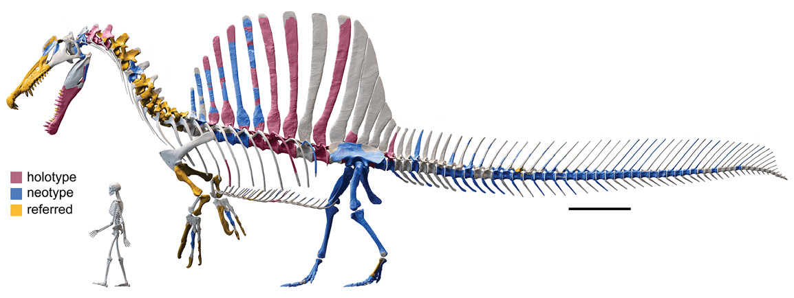
(Full render of the Spinosaurus skeleton. With Human skeleton for comparison.)
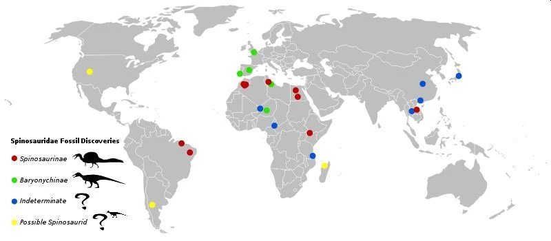
(Spinosaurus fossil disoveries)
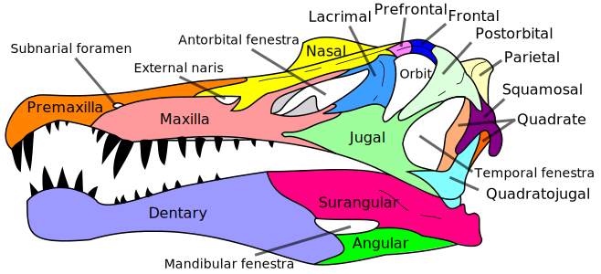
(A render of the Spinosaurus' skull.)
Fun Facts!
The Spinosaurus is one of the biggest carnivore specimen found!
The first fossils found of the Spinosaurus were destroyed by a British aircraft bombing during World War II
The Spinosaurus could run up to 15 miles per hour!